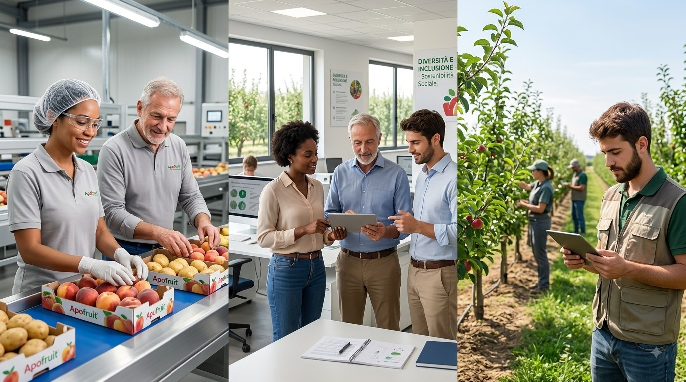
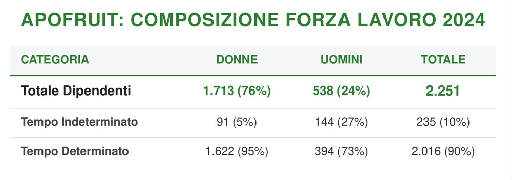
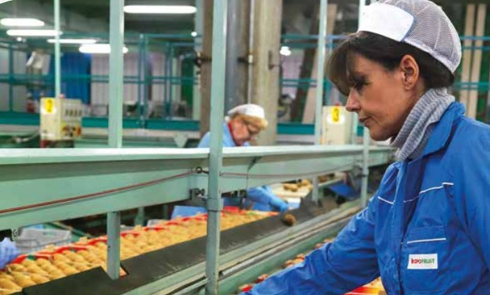

Forza lavoro propria
Forza Lavoro: Strategia e Valori
Apofruit riconosce l’importanza di promuovere un ambiente di lavoro equo, sicuro e inclusivo come pilastro fondamentale per il successo e la sostenibilità dell’impresa. La tutela dei diritti dei lavoratori, la sicurezza, la parità di trattamento e l’inclusione rappresentano per noi un dovere sociale e un fattore strategico per garantire la motivazione, il benessere e la produttività delle nostre persone.
Attraverso la nostra analisi di materialità, abbiamo identificato e gestiamo costantemente gli impatti legati alle condizioni lavorative:
- Condizioni di Lavoro: Generiamo impatti positivi garantendo stabilità occupazionale, salari adeguati, orari conformi alla normativa, dialogo sociale e contrattazione collettiva. Monitoriamo rigorosamente i potenziali impatti negativi legati alla salute e sicurezza e alla tutela della privacy dei lavoratori.
- Parità di Trattamento e Opportunità: Promuoviamo la parità di genere e di retribuzione, lo sviluppo delle competenze tramite formazione personalizzata, l'inclusione di persone con disabilità e la valorizzazione delle diversità. Inoltre, manteniamo un monitoraggio costante per prevenire in modo assoluto episodi di violenza o molestie sul luogo di lavoro.
Le Nostre Politiche a Tutela dei Lavoratori
Per assicurare un ambiente di lavoro ottimale, Apofruit si avvale di strumenti chiari e rigorosi:
- Contratto Collettivo Nazionale di Lavoro (CCNL): Regola i rapporti tra l'Azienda e i dipendenti, garantendo diritti fondamentali, salari adeguati, sicurezza sul lavoro, tutela del benessere e rappresentanza sindacale
- Codice Etico: Definisce i doveri e i diritti morali, vietando espressamente comportamenti lesivi della dignità umana (come mobbing e molestie) e garantendo processi di selezione basati su imparzialità, equità e assenza di discriminazioni.
- Politica di Salute e Sicurezza: L'Azienda investe costantemente in prevenzione, sensibilizzando e formando tutto il personale affinché la sicurezza sia una responsabilità condivisa a tutti i livelli dell'organizzazione.
In termini di organizzazione pratica, l’orario di lavoro per gli impiegati è standardizzato, mentre per il personale operativo è gestito con flessibilità nel rispetto delle garanzie di legge per far fronte ai picchi produttivi. Per favorire l'equilibrio tra vita privata e lavorativa, l'Azienda si impegna a trovare soluzioni flessibili personalizzate in base alle esigenze individuali dei dipendenti.
Metriche e Caratteristiche della Squadra Apofruit (Dati 2024)
Il 100% dei nostri dipendenti è coperto dal contratto collettivo di lavoro e dal sistema di salute e sicurezza, ricevendo un salario adeguato in linea con il CCNL

Interventi per le Condizioni di Lavoro e Pari Opportunità (S1-4)
Apofruit si impegna a garantire che tutta la forza lavoro goda di condizioni adeguate attraverso un impegno quotidiano, flessibile e personalizzato.
- Orari di Lavoro: L’orario per gli impiegati è standardizzato, mentre per il personale operativo (magazzino) è gestito con variabilità per rispondere alle necessità dell'impresa. Il Gruppo OTD adotta una gestione assimilabile a un part-time flessibile, garantendo le tutele sociali previste dalla legge nei periodi di picco produttivo.
- Work-Life Balance: Pur non avvalendosi di un sistema di welfare strutturato, l'Azienda dialoga con le proprie risorse per trovare soluzioni di flessibilità personalizzate e adattamenti individuali.
- Sicurezza: A garanzia della salute dei lavoratori, l'impresa ha stanziato un budget dedicato alla sicurezza che supera i limiti minimi imposti dalla normativa, supportato da formazione continua.
- Equità e Inclusione: Le fasi di selezione e l'ambiente di lavoro mirano a valorizzare le diversità senza distinzioni di genere. La formazione professionale è erogata su iniziativa dei dipendenti o per necessità aziendali e obblighi di legge. Viene inoltre favorito un inserimento attento e regolare di lavoratori stranieri.

Diritti, Retribuzione e Protezione Sociale (S1-8, S1-10, S1-11)
I diritti fondamentali e la sicurezza economica del personale sono garantiti dal pieno rispetto della contrattazione collettiva e da sistemi retributivi trasparenti
- Contrattazione Collettiva e Rappresentanza (S1-8): Il 100% dei dipendenti Apofruit è coperto dal contratto collettivo di lavoro. Inoltre, l’87% del personale è direttamente coperto da rappresentanti dei lavoratori.
- Salari Adeguati (S1-10): Tutti i dipendenti percepiscono un salario adeguato, allineato ai parametri di riferimento applicabili e al CCNL. L'Azienda si impegna a garantire parità di trattamento retributivo utilizzando criteri neutri, oggettivi e inclusivi, basati esclusivamente su competenza, esperienza, rendimento e qualità professionali.
- Protezione Sociale (S1-11): Tutti i dipendenti (100%) beneficiano di copertura per la protezione sociale, assicurata tramite programmi pubblici o specifiche prestazioni offerte dall’impresa per la salute e la sicurezza.
Salute e Sicurezza: Metriche 2024 (S1-14)
La responsabilità nella gestione della sicurezza riguarda l'intera organizzazione. Il 100% dei lavoratori all'interno della Cooperativa è coperto dal sistema di salute e sicurezza aziendale.
- Ore Lavorate: 2.375.571
- Infortuni e Decessi: Nel corso del 2024 non si è registrato alcun decesso dovuto a lesioni o malattie connesse al lavoro. Gli infortuni sul lavoro registrabili sono stati 39, determinando un tasso di infortuni pari a 16,41.
- Malattie Professionali: Si sono registrati 29 casi di malattie connesse al lavoro, principalmente riferibili a patologie degli arti superiori derivanti da movimenti ripetitivi.
- Giornate Perdute: Le giornate di lavoro perse a causa di infortuni ammontano a 1.161.
Conciliazione Vita-Lavoro e Congedi (S1-15)
Il supporto alla genitorialità e alle esigenze familiari è garantito e accessibile a tutto il personale
- Il 100% dei dipendenti (2.251 persone) possiede il diritto di usufruire di congedi per motivi familiari
- Nel corso del 2024, il 5% degli aventi diritto (111 dipendenti) ha effettivamente usufruito di questi congedi
- La ripartizione di chi ne ha usufruito è di 88 donne (4% del totale dipendenti) e 23 uomini (1%)
Inclusione e Disabilità (S1-12)
L'integrazione delle persone con disabilità rappresenta un ulteriore aspetto chiave dell'impegno sociale della Cooperativa, convalidato direttamente dalla direzione Risorse Umane.
- Sono presenti in Azienda 49 dipendenti con disabilità, pari al 2% della forza lavoro totale.
- La composizione di questo gruppo vede una netta maggioranza femminile: 42 donne (pari all'86% dei lavoratori con disabilità) e 7 uomini (14%).